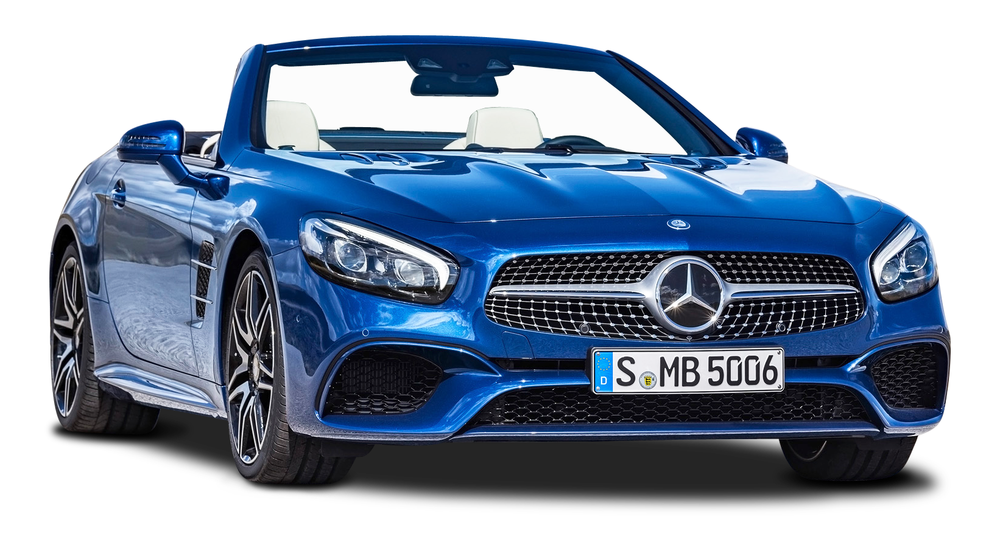
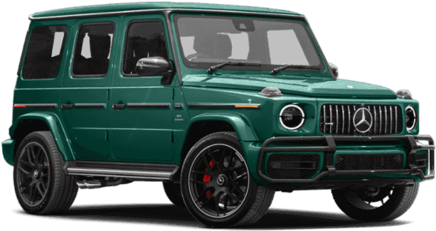

|
The Mercedes-AMG GT (C190 / R190) is a grand tourer produced in coupé and roadster bodystyles by
German automobile manufacturer Mercedes-AMG. The car was introduced on 9 September 2014 and was
officially unveiled to the public in October 2014 at the Paris Motor Show. After the SLS AMG, it
is the second sports car developed entirely in-house by Mercedes-AMG. The Mercedes-AMG GT went on
sale in two variants (GT and GT S) in March 2015, while a GT3 racing variant of the car was
introduced in 2015. A high performance variant called the GT R was introduced in 2016. A GT4 racing
variant, targeted at semi-professional drivers and based on the GT R variant, was introduced in
2017. While recently a new variant has been released called the AMG GT Black series. All variants
are assembled at the Mercedes-Benz plant in Sindelfingen, Germany.
|
|
The Mercedes-Benz SL-Class is a grand tourer sports car manufactured by Mercedes since 1954. The
designation SL derives from the German Super-Leicht, (English: Super Light). The original idea was
suggested by American importer Max Hoffman, who perceived a market for a toned-down Gran Prix car
tailored to affluent performance enthusiasts in the booming post-war American market, which remains
the primary market for the vehicles.
The SL designation was first applied to the 300 SL, often referred to as the "Gullwing" due to its
gullwing or upward-opening doors.
The term SL refers to the marketing variations of the vehicle, including the numerous engine
configurations spanning six design generations.
|

|
|

|
The Mercedes-Benz G-Class, sometimes called G-Wagen (short for Geländewagen, "terrain vehicle"), is a
mid-size four-wheel drive luxury SUV manufactured by Magna Steyr (formerly Steyr-Daimler-Puch) in
Austria and sold by Mercedes-Benz. In certain markets, it has been sold under the Puch name as Puch
G.
The G-Wagen is characterised by its boxy styling and body-on-frame construction. It uses three fully
locking differentials, one of the few vehicles to have such a feature.
Despite the introduction of an intended replacement, the unibody SUV Mercedes-Benz GL-Class in 2006,
the G-Class is still in production and is one of the longest-produced vehicles in Daimler's history,
with a span of 41 years. Only the Unimog surpasses it.
A Puch G branded example
The success and longevity of G-Class has reached another milestone: 400,000th unit was built on 4
December 2020. The 300,000th unit was built three years ago in 2017.
|